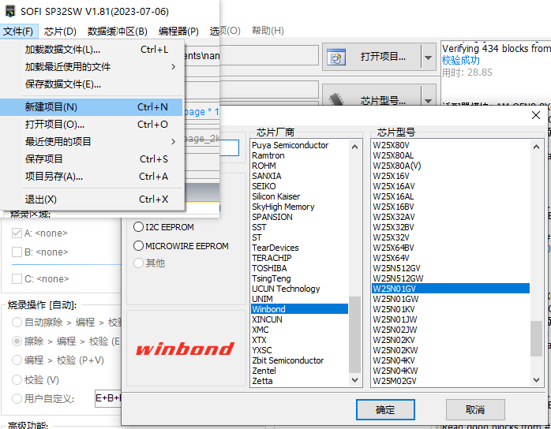

离线烧录
执行本节步骤和流程之前，确保已安装硕飞 SP328 烧录器，并准备好要烧录平台的镜像文件。更多关于烧录器的使用方法，可参考官方使用文档 (https://www.sflytech.com/download/software/SP32_Manual_cn.pdf) 以及软件使用文档。
准备镜像文件
-
在 SDK 根目录下，执行 make menuconfig 进入配置界面。
-
勾选下列制作镜像参数：
Filesystem images ---> [*] Generate burner format image对于 NAND 烧录镜像制作，需要设置 ROOTFS 为 UBI 文件格式：注：仅在使用 NAND 且使用 UBI 文件系统时执行下列步骤，否则可略过。
-
在根目录执行 make menuconfig 打开配置界面。
-
找到并使能下列配置项
ubi image containing an ubifs root filesystem：Filesystem images ---> RootFS images ---> [*] ubi image containing an ubifs root filesystem [ ] Use custom config file () Additional ubinize options
-
-
编译完成后，在编译输出目录 (images)/burner 下找到烧录器使用到的镜像，例如 d21x_demo100_nand_page_2k_block_128k_v1.0.0.bin。
新建项目
-
在烧录器软件菜单栏中，选择 。
-
在弹窗中，选择芯片类型后点击开始检测。
烧录器具有自动识别芯片的功能，若识别失败，则手动选择芯片型号。
-
在烧录器软件菜单栏中，点击。
在弹出的芯片型号选择对话框中，根据检查到的芯片型号选择匹配的型号。
图 1. 新建项目
加载烧录数据
创建新项目后，在系统弹窗中点击加载数据…文件夹，并选择准备烧录的镜像文件。
项目设置
- 选择烧录区域。
- 选择烧录操作（自动）。
- 选择附加选项。
项目运行（烧录操作）
点击自动单次即可开始烧录，右侧会显示烧录信息。烧录完成后，即可取下芯片焊接至对应平台进行上电验证。
分区烧录模式
分区烧录模式是一种针对 NAND Flash 存储器的烧录方式，允许将存储器划分为多个独立的区域，每个区域可以存储不同的数据。仅 NAND Flash 烧录设置有所不用，其它操作步骤不变。
-
打开 NAND Flash 烧录工具。
-
点击 NAND Flash 烧录选项，进入烧录选项设置界面。
-
在坏块处理方式选择框中，选择分区模式（含跳过坏块）。
-
点击图标选择输出目录 (images)/burner 中的 image_part_table.bin 文件后，即可导入分区表。
在分区烧录模式下，需要导入分区表。分区表是一个描述存储器分区结构的文件，包含了每个分区的起始地址、大小和其他相关信息。
坏块管理
| 问题 | 详细说明 |
|---|---|
| 坏块标识策略 | SDK 不使用 Spare area，其全部作为坏块管理用，使用 Spare area 的前两个字节做标识，不是 0xFF 0xFF 则表示为坏快，直接跳过。 |
| 坏块处理策略 | 直接跳过该块，无其他要特殊记录的资料信息。 |
| ECC 算法 | SDK 使用 FLASH 内部硬件 ECC， 因此没有额外的算法代码。 |
| 固定 BLOCK 要求 | 前四个 BLOCK 如果都是坏块，直接报出烧录失败，无其他特殊要求。 |
| 文件系统 | 根据客户需要会使用 FATFS 或者 littlefs。 |
| Image file 最大容量要求 | 根据客户需要，不限制最大容量，但 SPI NAND 性价比比较高的是 128 MB 或者 256 MB 的，推论分区一般在 200M 以下。 |